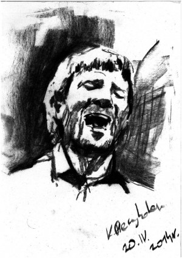
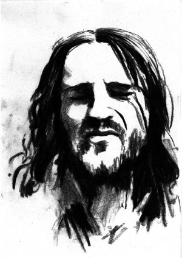
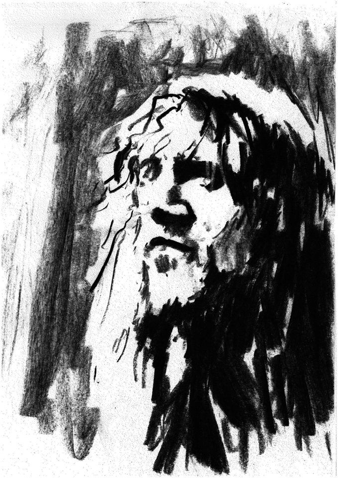
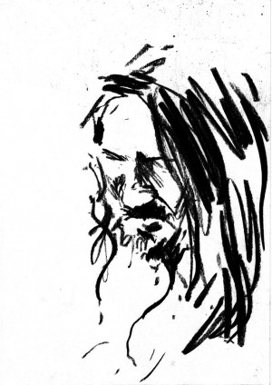
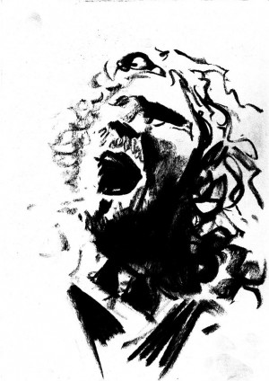

John Frusciante przeprogramowuje siebie, swoją muzykę i Black Knights.
John Frusciante nie mógłby mniej dbać o sławę, o zainteresowanie, o karmienie swojego ego i inne niematerialne korzyści, które sławie towarzyszą. Nawet jako członek jednej z najpopularniejszych grup rockowych w historii, przeważnie unikał pułapek gwiazdorstwa, zamiast tego spędzając 10 godzin dziennie na grze na gitarze lub innej aktywności związanej z muzyką, w służbie swojej Muzy. A odkąd jego drogi rozeszły się z drogami RHCP 6 lat temu, nie tylko odmienił całkowicie swoje podejście do gry na gitarze, ale także osiągnął mistrzostwo w sztuce samplingu i cyfrowej edycji muzyki. Zanurkował głęboko w świat syntezatorów i stworzył jednoosobowy muzyczny kosmos w którego centrum jest on sam – kompozytor.
„Jestem zdania, że AFX, Venetian Snares i inni ludzie, którzy eksperymentują z elektroniką stworzyli nowy muzyczny słownik, nowy sposób postrzegania muzyki.” mówi Frusciante. „Mogli tworzyć muzykę nie korzystając z konwencjonalnej teorii i technicznego przygotowania, które zwykliśmy uważać za niezbędne, korzystali tylko z dźwięku. Spędziłem 5 lat ucząc się tego języka – prawie tyle samo, ile zajęło mi nauczenie się gry na gitarze – bo czułem, że może to mieć wiele zastosowań poza tymi, do których już był używany.”
Te zastosowania zostały zgromadzone na trzech ostatnich solowych płytach Frusciante: PBX Funicular Intaglio Zone (2012), Outsides (2013) i wydanej w 2014 Enclosure – wszystkie ukazały się nakładem wydawnictwa Record Collection. Muzyka na tych trzech krążkach obejmuje skalę od eksperymentalnych, ale relatywnie przystępnych avant-popowych piosenek poprzez progresywną elektronikę, aż do w większości atonalnych dźwiękowych struktur, inspirowanych eksperymentalnym jazzem i 20-wieczną muzyką klasyczną. Pośród tej obfitości dźwiękowych frykasów jest całkiem sporo inspirującego grania gitarowego, by wymienić chociażby 10-minutowe solo w „Sam” z „Outsides”, które błyskotliwie krzyżuje się z ciągłymi modulacjami akordów.
Frusciante nagrał także trzy hip-hopowe albumy z raperami Rugged Monkiem i Crisisem, znanymi też jako Black Knights. Pierwszy z nich Medieval Chamber (Record Collection) ukazał się na początku tego roku. Poza produkcją tych albumów Frusciante napisał i nagrał całość muzyki, bazując na tych samych umiejętnościach, które wcześniej zademonstrował na swoich solowych albumach. „Tak długo jak beat jest mocny i raperzy odpowiadają na niego w twórczy sposób, muzyka może być w zasadzie każdego rodzaju.” entuzjazmuje się muzyk. „Czułem się swobodniej pracując nad tym albumem niż robiąc cokolwiek innego.”
Dlaczego postanowiłeś opuścić Chili Peppers w momencie gdy zespół odnosił niesamowite sukcesy?

Kiedy jesteś w zespole, każdy myśli, że zna najlepszy sposób by robić swoje i możesz zyskać przeciwników kiedy próbujesz forsować swoje kreatywne pomysły. A kiedy jesteś w popularnym zespole, jest szczególnie trudno rozwijać się i wyjść poza ustalone parametry i poza to, za co ludzie Cię lubią. Nawet nie zdajesz sobie sprawy, że tak robisz. Myślisz, że twoja następna płyta będzie zupełnie inna od poprzedniej, a potem zdajesz sobie sprawę, że niekoniecznie, bo jesteś ściśle ograniczony tym, jaka jest koncepcja zespołu.
Na przykład byłem w Japonii na jednym z naszych ostatnich występów i ćwiczyłem sobie w pokoju, grając do tych wszystkich acid housowych płyt. Próbowałem grac na gitarze tak, jak ludzie grali na syntezatorze Roland TB-303 i zdałem sobie sprawę „Wow, to jest zupełnie jak styl Roberta Frippa – przeskakiwanie oktaw i szerokie interwały”. Po chwili bardzo mnie to wciągnęło, więc gdy poszedłem na próbę dźwięku, grałem w ten sposób jamując z Flea i naszym technikiem od bębnów. To było wspaniałe. I potem wyszedłem na scenę i zacząłem tak grać i to zupełnie nie zadziałało duchowo. Kiedy stoisz przed 15 tysiącami ludzi i masz tę lustrzaną więź z publicznością, jeśli oni są przyzwyczajeni do tego, że grasz powiedzmy jak Jimi Hendrix, a ty tak nie zagrasz, to to nie zadziała. Edi Van Halen zawsze wychodzi na scenę i ma być Edim Van Halen – nie może być nikim innym, nawet jeśli bardzo by chciał. To jest niemal tak, jakby twoja kreatywność była ograniczana tymi oczekiwaniami, a ja nie chcę żyć przez resztę życia z ograniczoną kreatywnością. Chcę badać nowe rzeczy.
Czy była jakaś szczególna sytuacja, która doprowadziła do tego, że zaangażowałeś się jeszcze głębiej w tworzenie muzyki elektronicznej?
Miałem sen, że siedzę w swoim domu i słucham 20-minutowego utworu, który stworzyłem wyłącznie z sampli. W tym utworze jedna grupa pojawiała się po drugiej, a między nimi był rodzaj przejść. Byli tam The Beatles, Pink Floyd, część Talking Heads i tak dalej. Wysłuchałem go w całości w moim śnie i ostatnia rzecz, którą pomyślałem przed przebudzeniem było „Kiedy to zrobisz, będziesz w stanie zrobić wszystko.”
Przez cały następny rok pracowałem nad odtworzeniem tego utworu, kawałek po kawałku. Początkowo nie byłem pewny czy się uda, ale z czasem złożyłem całe 20 minut – jakieś 8 miesięcy później. Poczułem wtedy, że siedzenie nad samplami to to samo, co siedzenie z gitarą. Możesz ściągnąć ten kawałek z sieci. Nazywa się „Sect In Sgt.” a nagrałem go pod pseudonimem Trickfinger.
Opisz pokrótce sposoby na które używasz technologii by zrealizować muzykę, którą słyszysz w swojej głowie.
Moją główną cyfrową stacją roboczą jest Renoise. Korzystam też z różnych automatów perkusyjnych, sekwencerów i równolegle z różnych urządzeń: syntezatora Doepfera, syntezatora ARP i różnych innych syntezatorów. Wiele utworów na PBX i Enclosure zrodziło się z gitarowych pomysłów i rozwinąłem je z poprawnego wykonania, tak jak mógłby to zrobić gitarzysta lub inny instrumentalista, ale ja jestem bardziej zainteresowany znalezieniem ciekawych sposobów na to, by rzeczy które gram mogły być off time, ponieważ w takim czymś jest naprawdę muzyka.
Rozwiń tę myśl.

Odkryłem, że groovy składają się z tego i że tradycyjna teoria muzyki nie dała mi żadnych wskazówek, by zbadać tę część muzyki. Podejrzewam, że dorastając, ucząc się z winyli i płyt CD, zwracałem na to podświadomie uwagę. Zauważyłem też, że gdy byłem w zespole próbowałem zmienić coś, co było naszym ogólnym porządkiem w groovie, ale muzykowi trudno opisać to słowami. To po prostu przeczucie, które masz, gdy jesteś w zespole o tak mocnej chemii.
Nigdy nie badałem sampli RHCP, ale zgaduję, że Flea jest pierwszy, Chad drugi, a ja trzeci. Pamiętam, że próbowałem być pierwszy, ale po prostu nie mogłem tego zrobić. To nie chodzi o to w jakiej kolejności była reszta, tylko o to, gdzie ty pasowałeś.
Czy komponowanie dla Black Knights różni się od komponowania Twojej własnej muzyki?
Podstawowa różnica jest taka, że, przynajmniej w przypadku kilku moich ostatnich płyt, kiedy pracuję nad moją muzyką, generalnie zaczynam od tradycyjnych muzycznych pomysłów. Tymczasem w Black Knights wszystko zaczyna się od sampli.
"Never Let Go" to pierwszy singiel z Black Knights. Jakich technik użyłeś przy tworzeniu tego kawałka?
To był trzeci utwór który zrobiliśmy razem. To było na samym początku naszej współpracy i on jest naprawdę prosty. W zasadzie mamy tam cztery elementy: drum break z "When the Levee Breaks" Led Zeppelin, syntezator Synton Fenix, głosy chłopaków i pełny refren koweru „Danny`s Song” w wykonaniu Anne Murray. Pierwszy krok to było przepuszczenie partii Ann Murray przez equalizer analogowy i analogowy procesor, żeby usunąć jak najwięcej perkusji i basu oraz uwypuklić jej wokal. Potem obliczyłem ogólne tempo partii wokalnych i przetworzyłem sample bębnów w taki sposób, by były mniej więcej tej samej długości. Potem przepuściłem je przez equalizer, żeby wzmocnić werbel i przytłumić stopę. Byłem także w stanie podkreślić niekonwencjonalny sposób nagrywania bębnów, który zastosowali Zeps i dodać bardziej przestrzenny dźwięk poprzez podniesienie częstotliwości rezonansu pokoju. To wydobyło ten wirujący efekt, który osiągnęli nagrywając bębny na klatce schodowej. Bez wchodzenia w zbędne szczegóły następnym etapem było pocięcie dwóch części i ich obróbka na różne sposoby, tak by dobrze brzmiały razem, co nie było łatwe, nie tylko z powodu sposobu w jaki były nagrywane bębny. Na większości nagrań perkusji najgłośniejszy moment jest dokładnie tuż po uderzeniu pałeczki, ale w tym przypadku najgłośniejszy punkt był znacznie później, bo perkusja była daleko od mikrofonów i mieli naprawdę głośny pogłos. Więc każde uderzenie zaczyna się delikatnie i staje się coraz mocniejsze, aż do osiągnięcia maksymalnej głośności. Potem powtórzyłem ten proces, także miałem trzy różne wersje refrenu, dodałem syntezatorową linię basu, wokale i przetworzyłem je na wiele różnych sposobów korzystając z syntezatorów, pokoju akustycznego i innych rzeczy. Było tego znacznie więcej, ale tak to pokrótce wyglądało.

W jaki sposób wykorzystujesz pomieszczenie by wpływać na brzmienie głosów?
Mam w swoim studio pokój, który został profesjonalnie zbudowany po to by osiągnąć efekt wspaniałego brzmienia gitarowych wzmacniaczy podczas nagrywania. Ale skończyło się na tym, że mam tam pomieszczenie w którym są dwa wielkie głośniki, ściana wyłożona płytkami, ściana wyłożona pofalowanym drewnem i podłoga pokryta linoleum. Mogę nacisnąć kilka klawiszy na swoim komputerze i każdy dźwięk. który mam tam zapisany popłynie przez te głośniki i zostanie zarejestrowany przez umieszczone w różnych punktach tego pomieszczenia mikrofony, a następnie wróci do mojej konsoli Neve 8088. To rodzaj akustycznej komnaty z efektem echo, ale bardziej rozbudowany, używam też korektora graficznego i innych technik kontroli dźwięku. W przypadku „Never Let Go” prawdopodobnie wysłałem odwrócony głos Monka do tego pomieszczenia, nagrałem go, potem znów odwróciłem to nagranie i umieściłem je nieco wcześniej niż jego główna ścieżka wokalna. Tak więc są pewne kawałki rapu, gdzie jego głos brzmi bardziej przestrzennie. Rok w którym nagrywałem Outsides, Enclosure i pierwszą płytę z Black Knights był pierwszym rokiem kiedy dużo pracowałem z tym pomieszczeniem i stopniowo stało się ono dla mnie kolejnym instrumentem. Po prostu skupiam swoje inżynieryjne umiejętności na samym akcie kreacji. Jesteśmy skłonni do tego, by myśleć o profesjonalnych inżynierach dźwięku, jako o ludziach wynajmowanych przez wytwórnie płytowe, ludziach, których artyści rozstawiają po kątach i którzy nie mają swoich kreatywnych pomysłów, tylko realizują polecenia innych.
Przyjmujesz model pracy Les Paula.
Dokładnie. Dla niego inżynieria dźwięku i elektronika oraz gra na gitarze stanowiły jedność. Uważam, że to wspaniałe podejście. I sam widzisz nikt nie poszedł jego śladem. Robił to w 1948 roku, ale czy ktoś robił to choćby dekadę później?
Joe Meek, który ogromnie podziwiał Les Paula jest jedyną osobą która przychodzi mi do głowy.
O tak! Joe Meek robił coś podobnego.
Wracając do Twojej gry na gitarze, opisz proszę trochę pełniej w jaki sposób zaadaptowałeś do niej koncepcję syntetyzatorowego programowania.
Po raz pierwszy użyłem tej techniki przy nagraniu solo do „ "Enough of Me". Wtedy nie słyszałem jak będą brzmiały nuty, po prostu widziałem ich pozycje na skali i miałem nadzieję, że zabrzmią dobrze, gdy będę po wszystkim obrabiał solo komputerowo, by nadać mu bardziej spoisty flow. Ale gdy nad tym pracowałem, zacząłem ćwiczyć sobie ucho i finalnie, jeśli zagrałem nutę na strunie A przy 5 mostku, a potem nutę na strunie wysokie E przy 7 mostku, mogłem usłyszeć interwał w swojej głowie, zanim to zagrałem.
Innym rezultatem jest to, że brzmienie wysokich i niskich nut, które są daleko od siebie, jest tak różne, że jeśli naprzemiennie grasz wysoka, niską, wysoką, niską kończy się to tak, że dla twojego ucha brzmi to jak dwie oddzielne, koegzystujące z sobą melodie. W czasie przed nagraniem PBX, rozwinąłem całkiem nieźle tę technikę gry.
W jaki sposób zachowujesz równowagę między swoim doświadczeniem i tradycją, a graniem nowych rzeczy w nowy sposób, gdy rozwijasz swój gitarowy styl?

Jednocześnie ciągle próbuję łamać swoje przyzwyczajenia i doświadczenia, zarówno jako gitarzysta, jak i jako kompozytor. Jedną z najważniejszych rzeczy do zgłębienia w muzyce elektronicznej było przestawienie hierarchii muzycznych elementów w taki sposób, by bębny były na pierwszym miejscu przed melodią. Urodziłem się z naprawdę silnym wyczuciem melodii, a melodia była i jest podstawą niemal całej muzyki, od zawsze. Ale w takich gatunkach jak hip hop, house i techno nie musisz wcale mieć melodii, by tworzyć muzykę. Tak więc nawet gdy zaczynałem kawałek od bębnów, słyszałem melodie w swojej głowie i musiałem ich użyć. Przez pierwsze 2-3 lata tworzenia muzyki elektronicznej sprawiało mi trudność wciśnięcie mojego poczucia melodii w te kompozycyjne ramy. Tak było, aż do chwili gdy zrobiłem ostatnie 10 minut "Sect in Sgt" – wtedy poczułem, że mogę stworzyć kompletny utwór muzyczny nie korzystając z melodii.
Tak samo jest z moją gra na gitarze. Są teoretyczne i fizyczne elementy gry na gitarze, ale wiedziałem, że skoro tylko je opanuję, to moje naturalne wyczucie melodii zdominuje moją grę. Wszyscy mamy nasze własne sposoby chwytania nut, grania vibrato i możemy czuć się bardzo komfortowo robiąc to w taki sposób. Ale ja chciałem złamać moje przyzwyczajenia dla zabawy, jako rodzaj ćwiczenia. Wielu muzyków ma skłonność do polegania na swoim doświadczeniu, szczególnie jeśli chcą dopasować się do tego, co jest fajne i popularne, ale ja nie mam powodu by tak robić.
Przerzucenie się ze Stratów na Yamahy SG podczas nagrywania PBX było częścią tego procesu. Nie możesz naciskać strun w ten sam sposób na SG, używać niektórych rodzajów vibrato czy innych sztuczek, które masz opanowane. Zawsze lubiłem tworzyć i piętrzyć trudności, a gra na SG jest zdecydowanie znacznie trudniejsza niż gra na Stracie.
Wyzwania wyzwaniami, ale chyba jest coś co Ci odpowiada w Yamahach SG, skoro uczyniłeś je najważniejszymi instrumentami na swoich ostatnich albumach.
Lubię je i mam ich sześć czy siedem. Poza zmuszeniem mnie do zmiany stylu gry, dały mi duży wgląd w to, jak gra wielu innych gitarzystów. Jedna rzecz którą robię ciągle przez całe życie to gra do płyt: CD, winyli czy co tam mam pod ręką. Uważam, że to najlepsza forma muzycznej edukacji, bo nie studiujesz informacji zapisanych na kartce, tylko subtelne niuanse interpretacji i ekspresji oraz właściwe dźwięki. Uważamy życie w erze nagrywanej muzyki za coś oczywistego, ale nie doceniamy tego, jak zadziwiające możliwości to daje. Możesz to dostrzec na przykładzie takich artystów, jak Jimi Hendrix czy The Beatles. Pamiętam, że gdy byłem dzieciakiem myślałem ”Jimi Hendrix nawet nie umie czytać nut i tak gra na gitarze!”. Albo Paul McCartney ma tak po mistrzowsku opanowane harmonie, a nie wie co to interwał. Nauczył się tego odtwarzając płyty.
Korzystając z Yamahy SG mogę grać do płyt na których gitarzyści grali powiedzmy na Les Paulach i czuję, że dźwięk pasuje do tego, co słyszę na płytach. Na przykład jeśli uczysz się solówek Roberta Frippa na Stracie, dźwięk po prostu nie pasuje, a vibrato i chwyty są całkowicie inne. Gdybyś to wiedział nigdy nie zagrałbyś tych rzeczy na Stracie. Tonacja nie pasuje, chociaż gdy grasz na Stracie do kawałków Adriana Belewa lub Jimiego Hendrixa jest odpowiednia.
Tak więc było wielu gitarzystów, których gra była dla mnie nieco tajemnicza i nagle odkryłem, że łatwiej mi włączyć elementy ich stylu do mojej gry poprzez naśladowanie. Tacy muzycy jak Robert Fripp, Mick Ronson, Tony Iommi, a szczególnie John McGeoch ze Siouxie and The Banshees, który grał na Yamaha SG, byli powodem dla którego w pierwszej kolejności kupiłem jedną z tych gitar. To jest podejście do gitary na które byłem całe życie ślepy, bo zawsze grałem na instrumentach w typie Strata.
Czy Twoim zdaniem wiąże się to z długością skali i chwytem gryfu czy raczej z przystawkami i brzmieniem?

Kiedy uczysz się rzeczy słuchając płyt, w zasadzie cofasz się w czasie do momentu kiedy dana partia została nagrana i musisz przemyśleć ten moment. Musisz być lustrzanym odbiciem ich doświadczenia w tym momencie. I musisz też przeanalizować związek między nutami, które grali i między nutami granymi przez inne instrumenty, co pozwoli ci zrozumieć ich proces myślowy, bo kontekst harmoniczny wiele wyjaśnia.
Tego rodzaju sprawy są dla mnie nieskończenie fascynujące. Ale to zabiera mnóstwo czasu, by zebrać to w taki sposób. Robię to nieustannie od 30 lat. W zasadzie jedyny okres w moim życiu, kiedy spędziłem więcej czasu faktycznie tworząc muzykę, niż grając do wtóru płytom to ostatnie 5 lat – a nawet wtedy poświęcałem na to niemal połowę mojego czasu
Zazwyczaj, kiedy ludzie są gwiazdami rocka nie spędzają 10 godzin dziennie ucząc się kawałków z płyt, ale ja właśnie tak żyłem, kiedy byłem w trasach z RHCP i kiedy tworzyliśmy muzykę na kolejne płyty. To główna rzecz której poświęcam swój czas. To, równie mocno jak pozostanie zakorzenionym w tradycji, jest moim źródłem inspiracji. Nie potrafię przejść od oglądania TV do grania muzyki. Musze usiąść i grać do czegoś głośno grającego, aż poczuję „Ok., teraz mam fazę.” Ale co miałbym robić potem? Cofam się w czasie. Mój umysł pracuje na obrotach wyregulowanych na Black Sabbath.
Czy muzyka do której ćwiczysz grę ma wpływ na to, co równolegle komponujesz?
Muzyka, którą tworzę nie jest odbiciem muzyki, której słucham. To naprawdę działa w zupełnie inny sposób. Słucham konkretnej muzyki, bo ona ma coś wspólnego z tym, co akurat robię. Na przykład obecnie profesjonalnie inżynierowie dźwięku dążą do tego, by każdy dźwięk zawsze nagrywać z dużą ilością wysokiej częstotliwości. Ale jeśli posłuchasz starych nagrań zespołów takich jak Velvet Underground i Black Sabbath, dźwięki bardzo często są przytłumione, co uważam za bardzo przyjemne. Tak samo było w przypadku wczesnej muzyki elektronicznej, choć zazwyczaj był to efekt tego, że były to bardzo prymitywne nagrania. Skoro tylko artyści stali się lepszymi inżynierami i mieli lepszy sprzęt, stały się się wyraźniejsze. Ale ja naprawdę lubię to stłumione brzmienie, więc kiedy pracowałem nad PBX i pierwszym albumem Black Knights postanowiłem słuchać płyt, które miały takie ciepłe brzmienie.
Jest na Twoich ostatnich płytach wiele fantastycznych gitarowych brzmień. W tym także wspaniałe sprzężenia. Czy uzyskujesz je przy pomocy wzmacniacza, wielu wzmacniaczy czy efektów?
To kolejna rzecz, która jest inna, jeśli chodzi o grę na SG. Używając Strata nie mogłem uzyskać sprzężenia podłączając go po prostu do Marshalla Jubilee, ale przy SG mogę to zrobić, więc nie sądzę, żebym używał jakiś efektów przy tych nagraniach. Jedną z rzeczy które często robiłem było przetwarzanie gitarowych dźwięków przy pomocy syntezatorów. Coś z czego szczególnie korzystam to automat perkusyjny Roland TR-606, który jest zsynchronizowany z komputerem w taki sposób, aby wysyłać do różnych syntezatorów rytmiczne impulsy, tak by one przetwarzały dźwięki równolegle z muzyką. Zazwyczaj nagrywam te kawałki po jednym takcie, więc te specyficzne efekty są perfekcyjnie dopasowane do partii gitarowych czy nawet do poszczególnych nut. Jest tam tyle opcji. W końcowym efekcie brzmi to tak, jakby każdy z modułów syntezatorowych był uruchamiany przez mózg gitarzysty.
W „Fanfare” jest wspaniałe odwrócone solo gitarowe, ale wydaje mi się że ono nie jest tylko odwrócone, że zastosowałeś tam jeszcze jakieś inne triki.
Jak już wspominałem, słuchałem muzyki od końca grając solo, a potem włączyłem taśmę z solówką. By osiągnąć efekt tego, że gram dokładnie z muzyką ustawiłem magnetofon tak, by rozpoczynał nagrywanie automatycznie z początkiem pierwszego taktu i kończył wraz z końcem ostatniego taktu. Potem chyba odwróciłem to nagranie i odtworzyłem normalnie w studiu, co dodało dodatkowego „odwrócenia”, bo echo pomieszczenia wraca szybciej niż oryginalny odwrócony dźwięk gitary na innej ścieżce. I jeszcze chyba puściłem w studio oryginalny odwrócony dźwięk, by uzyskać więcej brzmienia również po gitarowych nutach.
Czy Yamaha SG była jedyną gitarą na której grałeś na swoich ostatnich płytach czy korzystałeś też z innych?
Grałem też na białym Rolandzie G-303 i na syntezatorze GR-300 w kilku utworach. Na przykład w "Cinch" połączyłem to z partiami SG w arpeggio na początku, gdy bębny przyśpieszają. Połączyłem odwróconą linię G—303 z akustyczną gitarą Carvin z nylonowymi strunami w solo "Breathiac", więc te utwory wydaja się opierać na tej samej myśli "Scratch", ale potem miałem fazę King Crimson z lat 80. I wróciłem do GR-300. Solo w "Shelf” zagrałem na Ibanezie Artist, a solo w "Same" na gitarze Calvin Allan Holdsworth.
Mam też gitarę Performance, zrobioną przez gościa, który nazywa się Kunio Sugai i ma warsztat w North Hollywood. Zagrałem na niej 10-minutowe solo w "Wayne" – piosence, którą nagrałem kilkanaście miesięcy temu, gdy zmarł mój przyjaciel. Jest podobna do Strata i ma wspaniały system ramienia tremolo, który bardzo dobrze zachowuje brzmienie. Po trzech latach grania głównie na SG, zauważyłem, że gram na niej coraz częściej.
Czym jest kreatywność?
Kreatywność jest wszędzie, cały czas. To natura tego, kim jesteśmy. W przypadku artystycznej kreatywności myślę że wielu ludzi stawia ją na piedestale i wyobraża sobie, że jest to coś poza ich zasięgiem – ale to jest najbardziej naturalna rzecz na świecie. Oczywiście jest wiele sposobów na które możesz ją blokować i szkodzić jej, na przykład patrząc na swoją sztukę jako na coś, za co chcesz dostać coś od świata zewnętrznego. Wtedy nie tworzysz sztuki – po prostu chcesz zwrócić na siebie uwagę. Będąc w tej branży od dawna, zauważyłem, że typowi gitarzyści, którzy dużo ćwiczą i poszukują zanim staną się sławni, kiedy już zdobędą sławę, przestają pracować i poszukiwać, zastygają w bezwładzie. Mówią sobie: „O.K., to jest coś za co wszyscy mnie lubią, więc tak będę grał.” To według mnie jest moment, gdy kreatywność się kończy.
Rozmawiał Barry Cleveland
W tekście wykorzystano jako ilustracje rysunki Kamila Pieczykolana.
Przetłumaczyła: Wanda Modzelewska
Edycja: Wanda Modzelewska